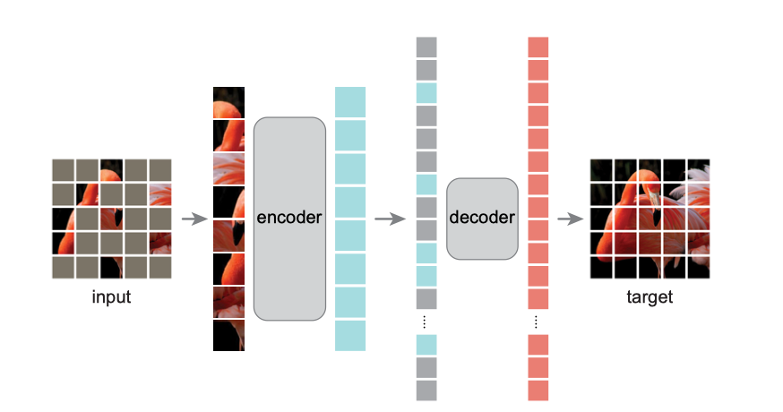

About
标题
Masked Autoencoders Are Scalable Vision Learners
掩码自动编码器：可拓展视觉学习器
发表
2021.11.11 arxiv tech report
作者
Kaiming He
Xinlei Chen
Saining Xie
Yanghao Li
Piotr Doll´ar
Ross Girshick
机构组织
Facebook AI Research
代码
原代码：未公开
复现：https://github.com/pengzhiliang/MAE-pytorch
Content

预处理
带有位置信息的随机掩码patches
编码器
除去掩码部分的patches输入到encoder中，提取特征
解码器
根据位置信息，将提取的特征与掩码合并输入解码器，还原出原图
Question
-
transformer / CNN，图像和mask ratio
老生重谈，transformer可以很好的获取全局特征。图像是具有真实世界存在的自然信号，有很强的空间(信息)冗余：一张照片遮住很多内容，也可以从其他部分判断出原图大概是什么样子；或者让你形容一下刚看过的一个人的穿着，脑海中不可能出现非常具体的细节，而只有大致的样子。
-
为什么要用掩码mask？
自监督方法训练预训练模型，之前的做法都是精心设计一个无标签的pre-task，然后获得预训练的特征提取模型，来完成下游任务。
mask是指移除一部分信息来学习预测消失的内容，来训练具有泛化能力的预训练模型。
最早是出现在NLP的BERT中，这种方法训练模型更接近自监督的本质。
本文的高mask ratio可以做到一石二鸟（强预训练模型和快训练）
-
ssl handcrafted pretext tasks 种类
-
intra-image
- colorization
- jigsaw puzzle
-
inter-image
-
recover
- 合成鉴别descriminating synthetic artifacts
- 着色colorization
- 图像补全image inpainting
- 降噪编码denoising auto-encoders
-
generate labels
- 寻找两个patch的关系predicting relation of two patches
- 拼图solving jigsaw puzzles，
-
下游任务
MAE的decodeer是可以根据需求随便改动的。本文的下游任务是reconstruct，训练和验证都用了。文章也做了物体检测和语义分割的下游实验，效果都比之前的BEiT效果好或者持平（但是MAE训练更快）。但是没有用预训练模型做聚类（做了线形回归linear probing）。
-
本文的surprise
1）简单高效的模型，给BEiT做减法，反而得到了更好的效果
2）超大的mask ratio，甚至连人都很能还原图像。这涉及到图像信息&回归的知识
3）没有使用最近热门的对抗学习 contrative learning，而是回到了generative learning
4）看了别人的评价说，推进了 NLP和CV模型的统一，不了解NLP不予评价
-
本文模型可改进的地方
知乎：“ 预训练的过程应该可以进一步优化吧，可以尝试一下课程学习，mask 的比例从小慢慢增大，感觉应该能减少一些预训练时间（类似 BERT 先训长为 128 的片段再训 512 一样）？”
感觉有些合理 但是违背了文章的初衷（大mask快又好）不知道会不会得到更好的效果
-
高度抽象出的预训练模型提出的特征丢失了细节，适合用在时装风格分类下游任务上吗？
不像ViT每层都是不同粒度的特征，丢失75%信息得到的高度抽象的特征，虽然linear probing很高，但是可以直接用于风格分类吗，或者一眼看出什么风格的区别是合理的吗
“Jigsaw Clustering for Unsupervised Visual Representation Learning” 无监督的特征学习for聚类